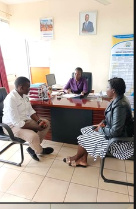
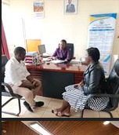

✦
Biodiversity & restoration
Tree growing, environmental conservation and community stewardship that protect local ecosystems and build climate resilience.
Related field work →Kisumu County, Kenya
We support biodiversity and food security within vulnerable communities through practical climate action, local partnerships and community-led solutions.
Who we are
Green World Advocates is a nonprofit organisation working from Kisumu, Kenya. Our work brings environmental stewardship together with practical responses to food insecurity and the everyday pressures facing vulnerable communities.
We collaborate with schools, community groups, public institutions and partner organisations to turn climate awareness into visible, community-owned action.
See what this looks like in the field ↗Our work
Designed around the realities of communities in Kisumu: climate risks, pressure on livelihoods, urban food insecurity and the need for stronger youth participation.
Tree growing, environmental conservation and community stewardship that protect local ecosystems and build climate resilience.
Related field work →Practical urban agriculture, conical gardens and organic approaches that strengthen household food and income security.
Related field work →School and community sensitisation on climate change, responsible waste management and cleaner, healthier neighbourhoods.
Related field work →Using sport, partnerships and public engagement to bring young people into environmental and social action.
Related field work →Communities are strongest when environmental protection is linked to food, livelihoods, health and opportunity.
Field notes
Partnerships
Green World Advocates regularly works alongside county actors, community organisations and development partners to connect environmental action with local priorities.
Food security
Small-space farming, organic inputs and practical demonstration gardens can improve both food access and household income in dense urban communities.
Manyatta • Obunga • NyalendaClimate education
Climate sensitisation and waste-management sessions help schools and communities connect everyday behaviour with a safer, cleaner and more sustainable environment.
Schools & community spaces
Youth engagement
Sport becomes a platform for environmental education, local fundraising and stronger participation by young people.
How we work
We focus on practical, visible interventions that can be understood, owned and sustained locally.
Start with the challenges communities are already naming.
Work with schools, public institutions, community groups and local organisations.
Connect awareness with tree growing, clean-ups, farming and youth activities.
From the field

Connect with us
For partnerships, community programmes, environmental activities or collaboration opportunities, reach Green World Advocates directly.